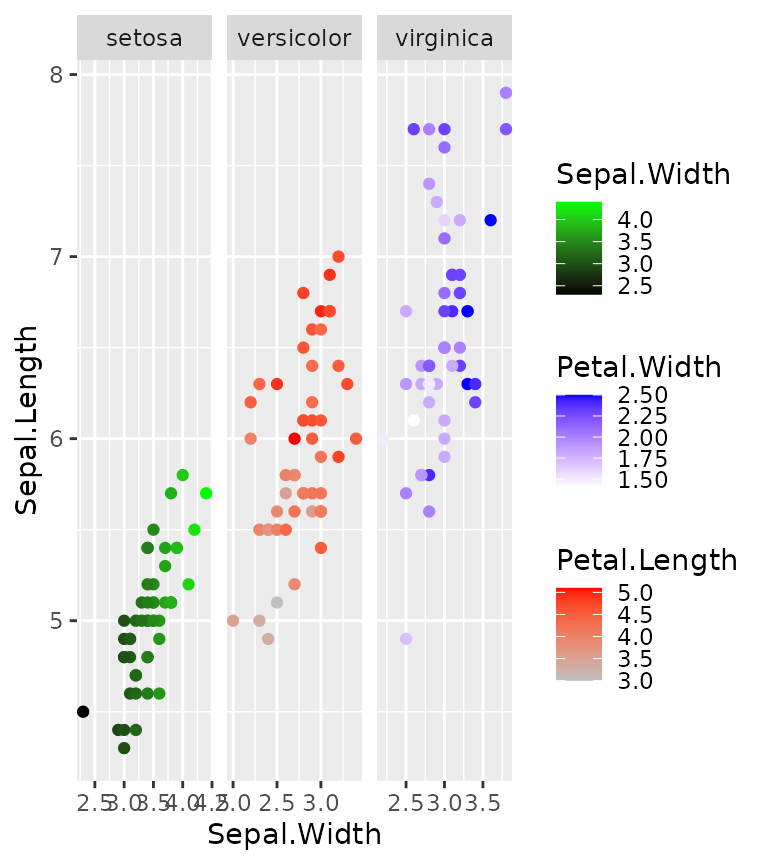
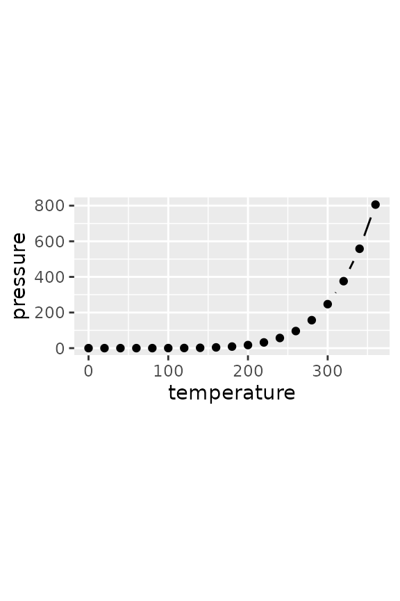
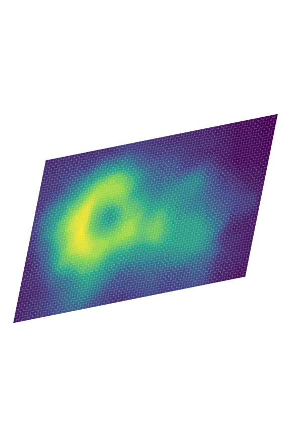
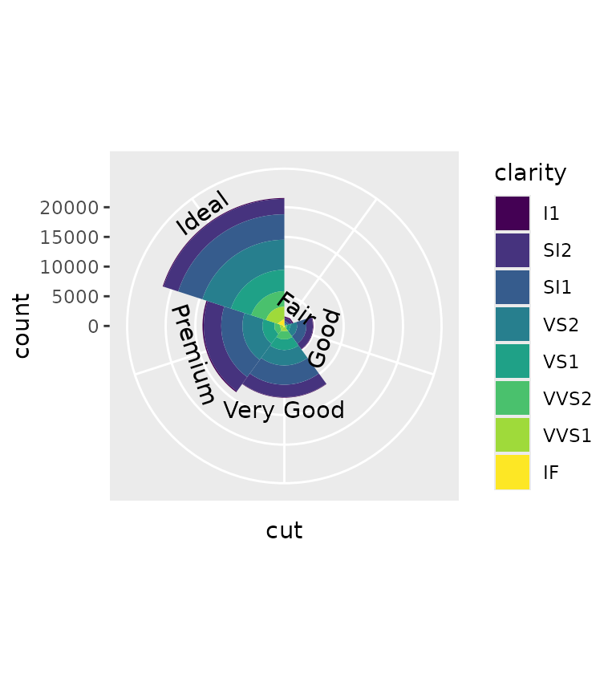

There are some other, smaller additions in ggh4x that aren’t really covered in the other vignettes.
Multiple colour scales
One colour scale is sometimes not enough to describe your data. You
can map several variables to colours with
scale_colour_multi() if data are in separate layers. It
works like scale_colour_gradientn(), but you can declare
the aesthetics to and provide other arguments in a vectorised way,
parallel to the aesthetics argument. In the example below,
a list() of colours is given, where the 1 list elements
becomes the argument of the first scale, the 2nd list element goes to
the second scale and so on. Other arguments that expect input of length
one can be given as a vector.
# Separating layers by species and declaring (yet) unknown aesthetics
g <- ggplot(iris, aes(Sepal.Width, Sepal.Length)) +
geom_point(aes(swidth = Sepal.Width),
data = ~ subset(., Species == "setosa")) +
geom_point(aes(pleng = Petal.Length),
data = ~ subset(., Species == "versicolor")) +
geom_point(aes(pwidth = Petal.Width),
data = ~ subset(., Species == "virginica")) +
facet_wrap(~ Species, scales = "free_x")
#> Warning in geom_point(aes(swidth = Sepal.Width), data = ~subset(., Species == :
#> Ignoring unknown aesthetics: swidth
#> Warning in geom_point(aes(pleng = Petal.Length), data = ~subset(., Species == :
#> Ignoring unknown aesthetics: pleng
#> Warning in geom_point(aes(pwidth = Petal.Width), data = ~subset(., Species == :
#> Ignoring unknown aesthetics: pwidth
# This generated quite some warnings, but this is no reason to worry!
g + scale_colour_multi(
aesthetics = c("swidth", "pleng", "pwidth"),
# Providing colours as a list distributes list-elements over different scales
colours = list(c("black", "green"),
c("gray", "red"),
c("white", "blue")),
guide = list(guide_colourbar(barheight = unit(35, "pt")))
)
You can combine continuous and discrete colour scales with the
slightly more verbose scale_listed(). We can illustrate
this with a heatmap, wherein we maybe want to use a discrete fill for
some annotation, but a continuous fill for the heatmap values. The
example below also includes geom_tilemargin(), which
conveniently can annotate heatmaps in the margin of a plot.
We can provide the correct fill scales as a list, as long as we match up the new aesthetics in the scales themselves and declare which old aesthetic they are to replace.
# Reshaping the iris dataset for heatmap purposes
iriscor <- cor(t(iris[, 1:4]))
iriscor <- data.frame(
x = as.vector(row(iriscor)),
y = as.vector(col(iriscor)),
correlation = as.vector(iriscor)
)
iris_df <- transform(iris, id = seq_len(nrow(iris)))
# Setting up the heatmap
g <- ggplot(iris_df, aes(id, id)) +
geom_tilemargin(aes(species = Species)) +
geom_raster(aes(x, y, cor = correlation),
data = iriscor) +
coord_fixed()
#> Warning in geom_tilemargin(aes(species = Species)): Ignoring unknown
#> aesthetics: species
#> Warning in geom_raster(aes(x, y, cor = correlation), data = iriscor):
#> Ignoring unknown aesthetics: cor
g + scale_listed(scalelist = list(
scale_fill_distiller(palette = "RdBu", aesthetics = "cor"),
scale_fill_brewer(palette = "Set1", aesthetics = "species")
), replaces = c("fill", "fill"))String legends
A simple but effective way to illustrate a straightforward mapping of
colour or fill aesthetics, is to use coloured
text. In ggh4x, you can do this by setting
guide = "stringlegend" as argument to colour and fill
scales, or set guides(colour = "stringlegend").
ggplot(diamonds, aes(price, carat, colour = clarity)) +
geom_point(shape = ".") +
scale_colour_brewer(palette = "Dark2", guide = "stringlegend")
#> Warning: The S3 guide system was deprecated in ggplot2 3.5.0.
#> ℹ It has been replaced by a ggproto system that can be extended.
#> This warning is displayed once every 8 hours.
#> Call `lifecycle::last_lifecycle_warnings()` to see where this warning was
#> generated.These legends do not have any keys, so key-related options are absent
when you use guide_stringlegend(). However, a few label
related options like family, face,
size have been added, as well as options to control the
spacing between the labels through
spacing/spacing.x/spacing.y.
p <- ggplot(mpg, aes(displ, hwy)) +
geom_point(aes(colour = class))
p + guides(colour = guide_stringlegend(face = "bold", spacing = 15))
p + guides(colour = guide_stringlegend(spacing.x = 0, spacing.y = 5,
family = "mono", ncol = 2))
Point paths
The return of the good old type = 'b' plot from base R!
This geom makes point connected through a line that starts and ends a
small distance from the points themselves. Calculating these small
offsets in absolute coordinates instead of data coordinates means they
are stable at different aspect ratios.
set.seed(0)
df <- data.frame(
x = 1:10,
y = cumsum(rnorm(10))
)
p <- ggplot(pressure, aes(temperature, pressure)) +
geom_pointpath()
p + theme(aspect.ratio = 0.5)
p + theme(aspect.ratio = 2)
The size of the small offset can be controlled with the
mult multiplier argument, but is otherwise dependant on the
average of on the linesize aesthetic for stroke size and
size aesthetic for point size. Also note that the
connecting lines disappear when points are spaced closely together.
ggplot(pressure, aes(temperature, pressure)) +
geom_pointpath(linesize = 2, size = 2, mult = 1)
#> Warning in geom_pointpath(linesize = 2, size = 2, mult = 1): Ignoring
#> unknown parameters: `linesize`An added bonus is that we can also use this point path in cartesian coordinates to get consistent curves.
p + coord_polar(theta = "y")
Polygon rasters
When you want to do more with rasters than just displaying them, the
geom_raster() and related tile- and rect geoms can be a bit
inflexible. To allow transformations of rasters, there is
geom_polygonraster(), which reparametrises the raster into
x and y parametrised polygons. This is less
efficient than the regular raster, but more flexible. With
position_lineartrans() you can perform linear
transformations on the coordinates.
df <- data.frame(
x = as.vector(row(volcano)),
y = as.vector(col(volcano)),
value = as.vector(volcano)
)
g <- ggplot(df, aes(x, y, fill = value)) +
scale_fill_viridis_c(guide = "none") +
theme_void()
g + geom_polygonraster(position = position_lineartrans(shear = c(0.2, 0.2))) +
coord_fixed()
g + geom_polygonraster(position = position_lineartrans(angle = 45)) +
coord_fixed()
g + geom_polygonraster() + coord_polar()Aiming text
You might sometimes want to put text in a plot at a particular angle.
You might want to annotate something ‘away’ from something else, in
which case it can sometimes be a bit of a pain to calculate the correct
angle, only to conclude that after resizing the plot that the angle was
not correct. With geom_text_aimed() the text is rotated by
an angle parallel to a line going from the text’s [x,y]
coordinate through some point in [xend,yend]. In the
example below, we ‘aim’ the text at the middle of the plot.
ggplot(transform(mtcars, car = rownames(mtcars)),
aes(mpg, wt)) +
geom_point(aes(colour = as.factor(cyl))) +
geom_text_aimed(aes(label = car),
hjust = -0.2, size = 3,
xend = sum(range(mtcars$mpg)) / 2,
yend = sum(range(mtcars$wt)) / 2) +
coord_cartesian(clip = "off")While the example above might be a bit silly, it might be easier to
show the usefulness when trying to annotate pieces of a polar
coordinates chart. Specifically for these kinds of charts, the default
[xend,yend] position is at [-Inf, Inf].
ggplot(mpg, aes(factor(1), fill = class)) +
geom_bar(show.legend = FALSE, position = "fill") +
geom_text_aimed(aes(x = 1.2, label = class, group = class),
position = position_fill(vjust = 0.5),
stat = "count") +
coord_polar("y") +
theme_void()
When specifying an angle in the geom, the calculated angle is added,
such that angle = 90 means that the text will become
perpendicular to the point defined in [xend, yend].
ggplot(diamonds, aes(cut, fill = clarity)) +
geom_bar(width = 1) +
geom_text_aimed(aes(label = cut, group = cut),
angle = 90,
stat = "count", nudge_y = 2000) +
scale_x_discrete(labels = NULL) +
coord_polar()
#> Warning: The following aesthetics were dropped during statistical transformation: fill.
#> ℹ This can happen when ggplot fails to infer the correct grouping structure in
#> the data.
#> ℹ Did you forget to specify a `group` aesthetic or to convert a numerical
#> variable into a factor?Axes inside panel
For some plots, we might be interested to have the plot’s axes
intersect some other value than the lowest limit. To place the axes
inside the plot panel, we can use coord_axes_inside(). By
default, coord_axes_inside() will try to place the axes at
the origin at (0, 0) or the point nearest to the origin, if the origin
is not within the limits.
p <- ggplot(mpg, aes(displ - mean(displ), hwy - mean(hwy))) +
geom_point() +
theme(axis.line = element_line())
p + coord_axes_inside()While for readability purposes, it makes sense to still place the
text labels outside the panel, you can also place the labels inside by
setting labels_inside = TRUE. In many cases, this can cause
some readability issues because the "0" label at the origin
will intersect with the orthogonal axes. You can circumvent this issue
by purposefully excluding that particular label.
An additional nicety is that coord_axis_inside() will
actually use the guide system, so it can be combined with custom axis
guides.
p + coord_axes_inside(labels_inside = TRUE) +
scale_x_continuous(
labels = ~ ifelse(.x == 0, "", .x),
guide = "axis_minor"
) +
scale_y_continuous(
labels = ~ ifelse(.x == 0, "", .x),
guide = "axis_truncated"
)